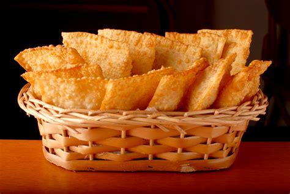

Brazilian Pastel
Brazil's best sunday routine.

Recipe
- 3 cups all purpose flour, plus more for dusting
- 1 tablespoon salt, or to taste
- 1 cup warm water
- 1 tablespoon vegetable oil
- 1 tablespoon white wine vinegar
- 1 tablespoon cachaça
- Vegetable oil for frying
Instructions
- In a large bowl, combine the flour and salt. Make a hole in the middle and add the water, oil, vinegar and cachaça. Mix well, using your hands, then transfer to a flour dusted surface and knead until the dough is smooth, elastic and no longer sticking to your hands or counter. Cover with a towel and let it rest for 30 minutes.